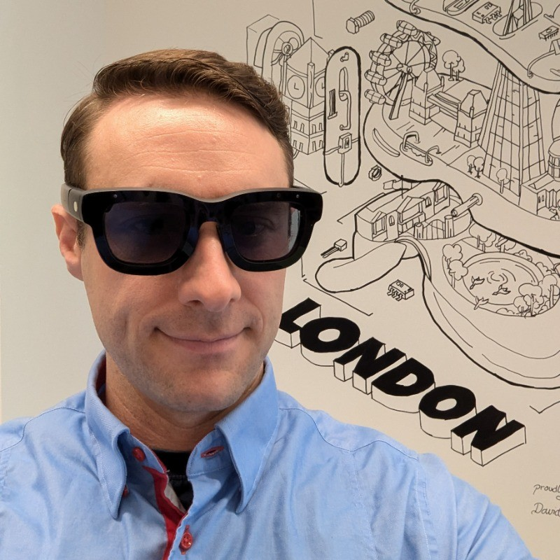

Game designer · UX prototyper · London
14 years making games and interactive systems: a $1M+ Quest launch title, five years prototyping AI and AR at Meta Reality Labs, 40+ released games, and a fortnightly AI game jam I run called Jamference.

Playable prototypes, jam games and shipped titles, many of them with AI as part of the mechanics.
Creative facilitation
I founded and host Jamference, a free, week-long game jam about making games with AI, out in the open. It runs every two weeks. I write each brief as a theme plus a mandatory design restriction, and set the rating rubric: Fun, AI Use, Polish, Theme. Entrants have to show which AI tools they used and what each one did, and I make a game every round too.
The restrictions are the point. Designing with "No Text" or "Movement Input Only" pushes people away from the obvious use of AI and towards ideas that are new.
Meta Reality Labs, Coinflip Studios and more: prototypes that shaped products, and products that shipped.
As founder of Story Machine AI, I design and build AI products end to end, with AI development tools and a small team.
Experiments in AI filmmaking, from a 45-minute speed run to a feature with songs.
I started out as a game designer: product manager at Zynga, lead systems designer for a run of mobile hits at Rocket Games, then co-founder of the studio behind Ninja Legends on Quest. At Meta Reality Labs I spent five years as a product design prototyper (IC6), building AI and AR experiences for Orion glasses and Quest and taking them from idea to executive demo.
My process is to get it playable fast, put it in front of players, and simplify ruthlessly. I prototype in high fidelity from day one, because with today's tools fidelity is cheap and it brings out real problems earlier.